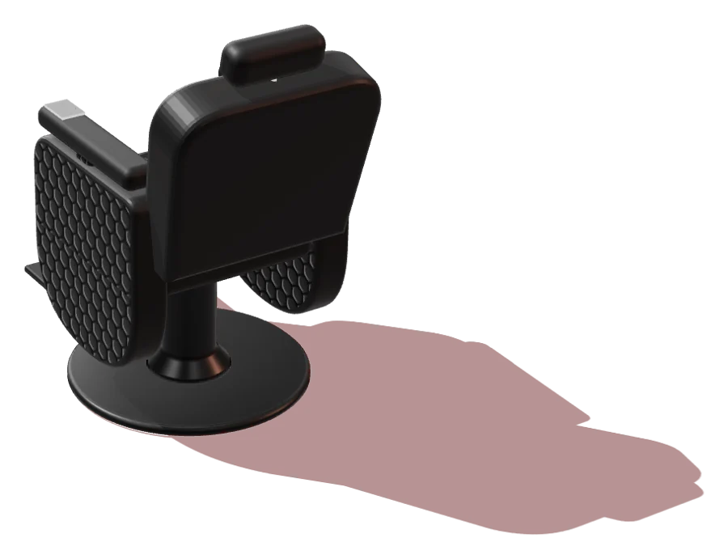

Elle
On regarde vos cheveux, on vous demande combien de temps vous voulez y mettre le matin, puis on coupe.
- Coupe et brushing45 min
- Mise en plis30 min
- Coloration1 h 30
- Mèches et balayage2 h
4Le dossier
Édition Beauharnois · à lire au salon
749, boulevard Cadieux · Beauharnois · Salon mixte
2Line Fortier Coiffure · Elle & Lui
On regarde vos cheveux, on vous demande combien de temps vous voulez y mettre le matin, puis on coupe.
4Le dossier
C'est le « Lui » du nom : la coupe aux ciseaux et le dégradé, pour les hommes comme pour les garçons.
5Le dossier
Durées indicatives. Le prix dépend du service et de la longueur des cheveux : on vous le donne au téléphone, avant de réserver. Appeler le 450 429-2222
Des clientes viennent depuis le premier jour. Aujourd'hui, elles amènent leurs enfants. Le salon de Line Fortier est resté au même endroit, au 749, boulevard Cadieux, et il a gardé la même façon de travailler.
Avant de couper, on vous demande ce que vous aimez et combien de temps vous voulez y mettre le matin. Une coupe qui demande une heure de séchoir n'est pas une bonne coupe si vous partez travailler à sept heures.
Le salon est mixte : c'est le « Elle & Lui » du nom. Les femmes y viennent pour la coupe, la mise en plis et la couleur ; les hommes et les garçons, pour la coupe aux ciseaux et les dégradés.

Avant de couper, on vous demande ce que vous aimez.
6Portrait
Par téléphone au 450 429-2222. Si vous préférez, laissez votre nom et votre numéro sur la carte-réponse plus bas : le salon vous rappelle.La réponse du salon
Oui. Coupes aux ciseaux, dégradés et skin fades, pour les hommes comme pour les garçons.La réponse du salon
Le prix dépend du service et de la longueur des cheveux. On vous le donne au téléphone, avant de réserver.La réponse du salon
Appelez avant de vous déplacer : on vous dira s'il reste une place dans la journée.La réponse du salon
8Courrier des lecteurs
9Carte-réponse